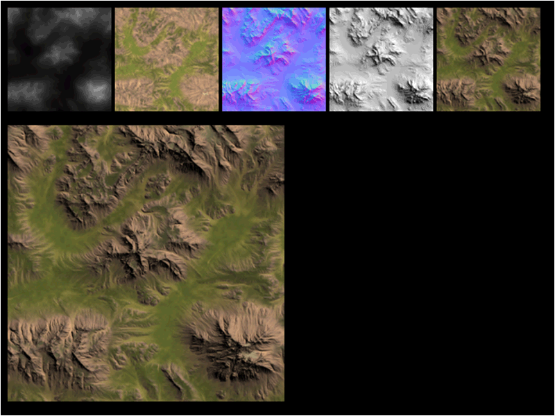
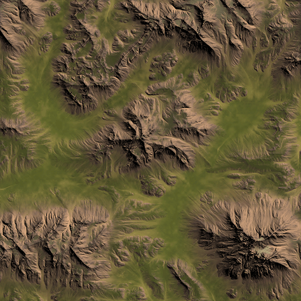
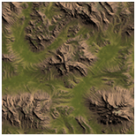
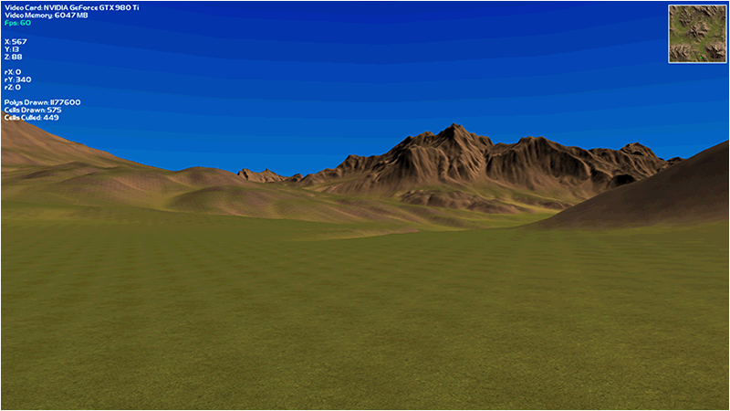

Mini-maps are small 2D maps in the user interface that help the user locate their current position on the terrain.
Most commonly they will be the color map that is used for the terrain with additional markings for points of interest and such.
Sometimes they are also artist created to give a different look to the map that fits with the rest of the user interface.
I personally like to combine the color map with a light map to give it a 3D top down perspective.
For example I run the RAW viewing program that I wrote which takes the RAW height map and the color map as input.
The program then produces the normal map, light map, and fully rendered map:

It also writes out the three maps it produces in bitmap format so I can access them after running the program:

So I take the fully rendered bitmap and use Photoshop to shrink it from 1025x1025 down to 150x150.
I then put a 2 pixel white border around it creating a 154x154 mini-map with a 150x150 map section:

Finally I take that mini-map and use the BitmapClass to render it in 2D in my terrain's user interface.
I also use a 3x3 green pixel which I put on top of the mini-map in accordance with the camera's position on the terrain.
Each frame I update the mini-map with the new position of the camera to keep the green pixel updated on the mini-map.
This way when I move around so does the green dot on the mini-map.

Minimapclass.h
The MiniMapClass contains two textures.
One is for the mini-map itself, the other is for the green location marker.
The class basically renders those two bitmaps to the screen in 2D and also keeps an update position of where the camera is on the terrain so that the green position indicator can be updated each frame.
////////////////////////////////////////////////////////////////////////////////
// Filename: minimapclass.h
////////////////////////////////////////////////////////////////////////////////
#ifndef _MINIMAPCLASS_H_
#define _MINIMAPCLASS_H_
///////////////////////
// MY CLASS INCLUDES //
///////////////////////
#include "bitmapclass.h"
#include "shadermanagerclass.h"
////////////////////////////////////////////////////////////////////////////////
// Class name: MiniMapClass
////////////////////////////////////////////////////////////////////////////////
class MiniMapClass
{
public:
MiniMapClass();
MiniMapClass(const MiniMapClass&);
~MiniMapClass();
bool Initialize(ID3D11Device*, ID3D11DeviceContext*, int, int, float, float);
void Shutdown();
bool Render(ID3D11DeviceContext*, ShaderManagerClass*, XMMATRIX, XMMATRIX, XMMATRIX);
void PositionUpdate(float, float);
private:
int m_mapLocationX, m_mapLocationY, m_pointLocationX, m_pointLocationY;
float m_mapSizeX, m_mapSizeY, m_terrainWidth, m_terrainHeight;
BitmapClass *m_MiniMapBitmap, *m_PointBitmap;
};
#endif
Minimapclass.cpp
////////////////////////////////////////////////////////////////////////////////
// Filename: minimapclass.cpp
////////////////////////////////////////////////////////////////////////////////
#include "minimapclass.h"
The two bitmaps are initialized to null in the class constructor.
MiniMapClass::MiniMapClass()
{
m_MiniMapBitmap = 0;
m_PointBitmap = 0;
}
MiniMapClass::MiniMapClass(const MiniMapClass& other)
{
}
MiniMapClass::~MiniMapClass()
{
}
bool MiniMapClass::Initialize(ID3D11Device* device, ID3D11DeviceContext* deviceContext, int screenWidth, int screenHeight,
float terrainWidth, float terrainHeight)
{
bool result;
The Initialize function starts by storing the location of the mini-map, its size, and the actual size of the terrain mesh.
// Set the size of the mini-map minus the borders.
m_mapSizeX = 150.0f;
m_mapSizeY = 150.0f;
// Initialize the location of the mini-map on the screen.
m_mapLocationX = screenWidth - (int)m_mapSizeX - 10;
m_mapLocationY = 10;
// Store the terrain size.
m_terrainWidth = terrainWidth;
m_terrainHeight = terrainHeight;
Next we create the mini-map from the minimap.tga file.
Even though the rendered map is 1025x1025 we have shrunk it down to 154x154 so that displaying it does not take up too much of the screen.
// Create the mini-map bitmap object.
m_MiniMapBitmap = new BitmapClass;
if(!m_MiniMapBitmap)
{
return false;
}
// Initialize the mini-map bitmap object.
result = m_MiniMapBitmap->Initialize(device, deviceContext, screenWidth, screenHeight, 154, 154,
"../Engine/data/minimap/minimap.tga");
if(!result)
{
return false;
}
And finally we load the point indicator.
It is a 3x3 green pixel that we will use and constantly update to show where the user currently is located on the mini-map.
// Create the point bitmap object.
m_PointBitmap = new BitmapClass;
if(!m_PointBitmap)
{
return false;
}
// Initialize the point bitmap object.
result = m_PointBitmap->Initialize(device, deviceContext, screenWidth, screenHeight, 3, 3,
"../Engine/data/minimap/point.tga");
if(!result)
{
return false;
}
return true;
}
The Shutdown function releases the two bitmap objects that were used for rendering the mini-map elements.
void MiniMapClass::Shutdown()
{
// Release the point bitmap object.
if(m_PointBitmap)
{
m_PointBitmap->Shutdown();
delete m_PointBitmap;
m_PointBitmap = 0;
}
// Release the mini-map bitmap object.
if(m_MiniMapBitmap)
{
m_MiniMapBitmap->Shutdown();
delete m_MiniMapBitmap;
m_MiniMapBitmap = 0;
}
return;
}
bool MiniMapClass::Render(ID3D11DeviceContext* deviceContext, ShaderManagerClass* ShaderManager, XMMATRIX worldMatrix,
XMMATRIX viewMatrix, XMMATRIX orthoMatrix)
{
bool result;
First we start by rendering the mini-map bitmap.
// Put the mini-map bitmap vertex and index buffers on the graphics pipeline to prepare them for drawing.
result = m_MiniMapBitmap->Render(deviceContext, m_mapLocationX, m_mapLocationY);
if(!result)
{
return false;
}
// Render the mini-map bitmap using the texture shader.
result = ShaderManager->RenderTextureShader(deviceContext, m_MiniMapBitmap->GetIndexCount(), worldMatrix, viewMatrix,
orthoMatrix, m_MiniMapBitmap->GetTexture());
if(!result)
{
return false;
}
And then the point indicator is rendered on the mini-map according the where the user is currently located on the 3D terrain mesh.
// Put the point bitmap vertex and index buffers on the graphics pipeline to prepare them for drawing.
result = m_PointBitmap->Render(deviceContext, m_pointLocationX, m_pointLocationY);
if(!result)
{
return false;
}
// Render the point bitmap using the texture shader.
result = ShaderManager->RenderTextureShader(deviceContext, m_PointBitmap->GetIndexCount(), worldMatrix, viewMatrix,
orthoMatrix, m_PointBitmap->GetTexture());
if(!result)
{
return false;
}
return true;
}
The PositionUpdate function is used for updating where the 3x3 green pixel point indicator should be located on the mini-map.
It converts the 3D float position of the camera on the terrain into a 2D position on the bitmap.
It also makes sure the indicator never goes past the borders of the mini-map.
void MiniMapClass::PositionUpdate(float positionX, float positionZ)
{
float percentX, percentY;
// Ensure the point does not leave the minimap borders even if the camera goes past the terrain borders.
if(positionX < 0)
{
positionX = 0;
}
if(positionZ < 0)
{
positionZ = 0;
}
if(positionX > m_terrainWidth)
{
positionX = m_terrainWidth;
}
if(positionZ > m_terrainHeight)
{
positionZ = m_terrainHeight;
}
// Calculate the position of the camera on the minimap in terms of percentage.
percentX = positionX / m_terrainWidth;
percentY = 1.0f - (positionZ / m_terrainHeight);
// Determine the pixel location of the point on the mini-map.
m_pointLocationX = (m_mapLocationX + 2) + (int)(percentX * m_mapSizeX);
m_pointLocationY = (m_mapLocationY + 2) + (int)(percentY * m_mapSizeY);
// Subtract one from the location to center the point on the mini-map according to the 3x3 point pixel image size.
m_pointLocationX = m_pointLocationX - 1;
m_pointLocationY = m_pointLocationY - 1;
return;
}
Userinterfaceclass.h
The MiniMapClass has been added to the UserInterfaceClass.
////////////////////////////////////////////////////////////////////////////////
// Filename: userinterfaceclass.h
////////////////////////////////////////////////////////////////////////////////
#ifndef _USERINTERFACECLASS_H_
#define _USERINTERFACECLASS_H_
///////////////////////
// MY CLASS INCLUDES //
///////////////////////
#include "textclass.h"
#include "minimapclass.h"
////////////////////////////////////////////////////////////////////////////////
// Class name: UserInterfaceClass
////////////////////////////////////////////////////////////////////////////////
class UserInterfaceClass
{
public:
UserInterfaceClass();
UserInterfaceClass(const UserInterfaceClass&);
~UserInterfaceClass();
bool Initialize(D3DClass*, int, int);
void Shutdown();
bool Frame(ID3D11DeviceContext*, int, float, float, float, float, float, float);
bool Render(D3DClass*, ShaderManagerClass*, XMMATRIX, XMMATRIX, XMMATRIX);
bool UpdateRenderCounts(ID3D11DeviceContext*, int, int, int);
private:
bool UpdateFpsString(ID3D11DeviceContext*, int);
bool UpdatePositionStrings(ID3D11DeviceContext*, float, float, float, float, float, float);
private:
FontClass* m_Font1;
TextClass *m_FpsString, *m_VideoStrings, *m_PositionStrings;
int m_previousFps;
int m_previousPosition[6];
TextClass* m_RenderCountStrings;
MiniMapClass* m_MiniMap;
};
#endif
Userinterfaceclass.cpp
///////////////////////////////////////////////////////////////////////////////
// Filename: userinterfaceclass.cpp
///////////////////////////////////////////////////////////////////////////////
#include "userinterfaceclass.h"
UserInterfaceClass::UserInterfaceClass()
{
m_Font1 = 0;
m_FpsString = 0;
m_VideoStrings = 0;
m_PositionStrings = 0;
m_RenderCountStrings = 0;
m_MiniMap = 0;
}
UserInterfaceClass::UserInterfaceClass(const UserInterfaceClass& other)
{
}
UserInterfaceClass::~UserInterfaceClass()
{
}
bool UserInterfaceClass::Initialize(D3DClass* Direct3D, int screenHeight, int screenWidth)
{
bool result;
char videoCard[128];
int videoMemory;
char videoString[144];
char memoryString[32];
char tempString[16];
int i;
// Create the first font object.
m_Font1 = new FontClass;
if (!m_Font1)
{
return false;
}
// Initialize the first font object.
result = m_Font1->Initialize(Direct3D->GetDevice(), Direct3D->GetDeviceContext(), "../Engine/data/font/font01.txt",
"../Engine/data/font/font01.tga", 32.0f, 3);
if (!result)
{
return false;
}
// Create the text object for the fps string.
m_FpsString = new TextClass;
if (!m_FpsString)
{
return false;
}
// Initialize the fps text string.
result = m_FpsString->Initialize(Direct3D->GetDevice(), Direct3D->GetDeviceContext(), screenWidth, screenHeight, 16, false, m_Font1,
"Fps: 0", 10, 50, 0.0f, 1.0f, 0.0f);
if (!result)
{
return false;
}
// Initial the previous frame fps.
m_previousFps = -1;
// Setup the video card strings.
Direct3D->GetVideoCardInfo(videoCard, videoMemory);
strcpy_s(videoString, "Video Card: ");
strcat_s(videoString, videoCard);
_itoa_s(videoMemory, tempString, 10);
strcpy_s(memoryString, "Video Memory: ");
strcat_s(memoryString, tempString);
strcat_s(memoryString, " MB");
// Create the text objects for the video strings.
m_VideoStrings = new TextClass[2];
if (!m_VideoStrings)
{
return false;
}
// Initialize the video text strings.
result = m_VideoStrings[0].Initialize(Direct3D->GetDevice(), Direct3D->GetDeviceContext(), screenWidth, screenHeight, 256, false, m_Font1,
videoString, 10, 10, 1.0f, 1.0f, 1.0f);
if(!result)
{
return false;
}
result = m_VideoStrings[1].Initialize(Direct3D->GetDevice(), Direct3D->GetDeviceContext(), screenWidth, screenHeight, 32, false, m_Font1,
memoryString, 10, 30, 1.0f, 1.0f, 1.0f);
if(!result)
{
return false;
}
// Create the text objects for the position strings.
m_PositionStrings = new TextClass[6];
if(!m_PositionStrings)
{
return false;
}
// Initialize the position text strings.
result = m_PositionStrings[0].Initialize(Direct3D->GetDevice(), Direct3D->GetDeviceContext(), screenWidth, screenHeight, 16, false, m_Font1,
"X: 0", 10, 310, 1.0f, 1.0f, 1.0f);
if(!result)
{
return false;
}
result = m_PositionStrings[1].Initialize(Direct3D->GetDevice(), Direct3D->GetDeviceContext(), screenWidth, screenHeight, 16, false, m_Font1,
"Y: 0", 10, 330, 1.0f, 1.0f, 1.0f);
if(!result)
{
return false;
}
result = m_PositionStrings[2].Initialize(Direct3D->GetDevice(), Direct3D->GetDeviceContext(), screenWidth, screenHeight, 16, false, m_Font1,
"Z: 0", 10, 350, 1.0f, 1.0f, 1.0f);
if(!result)
{
return false;
}
result = m_PositionStrings[3].Initialize(Direct3D->GetDevice(), Direct3D->GetDeviceContext(), screenWidth, screenHeight, 16, false, m_Font1,
"rX: 0", 10, 370, 1.0f, 1.0f, 1.0f);
if(!result)
{
return false;
}
result = m_PositionStrings[4].Initialize(Direct3D->GetDevice(), Direct3D->GetDeviceContext(), screenWidth, screenHeight, 16, false, m_Font1,
"rY: 0", 10, 390, 1.0f, 1.0f, 1.0f);
if(!result)
{
return false;
}
result = m_PositionStrings[5].Initialize(Direct3D->GetDevice(), Direct3D->GetDeviceContext(), screenWidth, screenHeight, 16, false, m_Font1,
"rZ: 0", 10, 410, 1.0f, 1.0f, 1.0f);
if(!result)
{
return false;
}
// Initialize the previous frame position.
for(i=0; i<6; i++)
{
m_previousPosition[i] = -1;
}
// Create the text objects for the render count strings.
m_RenderCountStrings = new TextClass[3];
if(!m_RenderCountStrings)
{
return false;
}
// Initialize the render count strings.
result = m_RenderCountStrings[0].Initialize(Direct3D->GetDevice(), Direct3D->GetDeviceContext(), screenWidth, screenHeight, 32, false, m_Font1,
"Polys Drawn: 0", 10, 260, 1.0f, 1.0f, 1.0f);
if(!result)
{
return false;
}
result = m_RenderCountStrings[1].Initialize(Direct3D->GetDevice(), Direct3D->GetDeviceContext(), screenWidth, screenHeight, 32, false, m_Font1,
"Cells Drawn: 0", 10, 280, 1.0f, 1.0f, 1.0f);
if(!result)
{
return false;
}
result = m_RenderCountStrings[2].Initialize(Direct3D->GetDevice(), Direct3D->GetDeviceContext(), screenWidth, screenHeight, 32, false, m_Font1,
"Cells Culled: 0", 10, 300, 1.0f, 1.0f, 1.0f);
if(!result)
{
return false;
}
We setup the mini-map object here.
// Create the mini-map object.
m_MiniMap = new MiniMapClass;
if(!m_MiniMap)
{
return false;
}
// Initialize the mini-map object.
result = m_MiniMap->Initialize(Direct3D->GetDevice(), Direct3D->GetDeviceContext(), screenWidth, screenHeight, 1025, 1025);
if(!m_MiniMap)
{
return false;
}
return true;
}
void UserInterfaceClass::Shutdown()
{
The mini-map is released in the Shutdown function.
// Release the mini-map object.
if(m_MiniMap)
{
m_MiniMap->Shutdown();
delete m_MiniMap;
m_MiniMap = 0;
}
// Release the render count strings.
if(m_RenderCountStrings)
{
m_RenderCountStrings[0].Shutdown();
m_RenderCountStrings[1].Shutdown();
m_RenderCountStrings[2].Shutdown();
delete [] m_RenderCountStrings;
m_RenderCountStrings = 0;
}
// Release the position text strings.
if(m_PositionStrings)
{
m_PositionStrings[0].Shutdown();
m_PositionStrings[1].Shutdown();
m_PositionStrings[2].Shutdown();
m_PositionStrings[3].Shutdown();
m_PositionStrings[4].Shutdown();
m_PositionStrings[5].Shutdown();
delete [] m_PositionStrings;
m_PositionStrings = 0;
}
// Release the video card string.
if(m_VideoStrings)
{
m_VideoStrings[0].Shutdown();
m_VideoStrings[1].Shutdown();
delete [] m_VideoStrings;
m_VideoStrings = 0;
}
// Release the fps text string.
if(m_FpsString)
{
m_FpsString->Shutdown();
delete m_FpsString;
m_FpsString = 0;
}
// Release the font object.
if(m_Font1)
{
m_Font1->Shutdown();
delete m_Font1;
m_Font1 = 0;
}
return;
}
bool UserInterfaceClass::Frame(ID3D11DeviceContext* deviceContext, int fps, float posX, float posY, float posZ,
float rotX, float rotY, float rotZ)
{
bool result;
// Update the fps string.
result = UpdateFpsString(deviceContext, fps);
if(!result)
{
return false;
}
// Update the position strings.
result = UpdatePositionStrings(deviceContext, posX, posY, posZ, rotX, rotY, rotZ);
if(!result)
{
return false;
}
Each frame we update the X and Z position in the 2D mini-map to reflect where the camera has moved to on the 3D terrain.
// Update the mini-map position indicator.
m_MiniMap->PositionUpdate(posX, posZ);
return true;
}
bool UserInterfaceClass::Render(D3DClass* Direct3D, ShaderManagerClass* ShaderManager, XMMATRIX worldMatrix, XMMATRIX viewMatrix,
XMMATRIX orthoMatrix)
{
int i;
bool result;
// Turn off the Z buffer and enable alpha blending to begin 2D rendering.
Direct3D->TurnZBufferOff();
Direct3D->EnableAlphaBlending();
// Render the fps string.
m_FpsString->Render(Direct3D->GetDeviceContext(), ShaderManager, worldMatrix, viewMatrix, orthoMatrix, m_Font1->GetTexture());
// Render the video card strings.
m_VideoStrings[0].Render(Direct3D->GetDeviceContext(), ShaderManager, worldMatrix, viewMatrix, orthoMatrix, m_Font1->GetTexture());
m_VideoStrings[1].Render(Direct3D->GetDeviceContext(), ShaderManager, worldMatrix, viewMatrix, orthoMatrix, m_Font1->GetTexture());
// Render the position and rotation strings.
for(i=0; i<6; i++)
{
m_PositionStrings[i].Render(Direct3D->GetDeviceContext(), ShaderManager, worldMatrix, viewMatrix, orthoMatrix, m_Font1->GetTexture());
}
// Render the render count strings.
for(i=0; i<3; i++)
{
m_RenderCountStrings[i].Render(Direct3D->GetDeviceContext(), ShaderManager, worldMatrix, viewMatrix, orthoMatrix, m_Font1->GetTexture());
}
// Turn off alpha blending now that the text has been rendered.
Direct3D->DisableAlphaBlending();
The mini-map rendering is called here.
// Render the mini-map.
result = m_MiniMap->Render(Direct3D->GetDeviceContext(), ShaderManager, worldMatrix, viewMatrix, orthoMatrix);
if(!result)
{
return false;
}
// Turn the Z buffer back on now that the 2D rendering has completed.
Direct3D->TurnZBufferOn();
return true;
}
bool UserInterfaceClass::UpdateFpsString(ID3D11DeviceContext* deviceContext, int fps)
{
char tempString[16];
char finalString[16];
float red, green, blue;
bool result;
// Check if the fps from the previous frame was the same, if so don't need to update the text string.
if(m_previousFps == fps)
{
return true;
}
// Store the fps for checking next frame.
m_previousFps = fps;
// Truncate the fps to below 100,000.
if(fps > 99999)
{
fps = 99999;
}
// Convert the fps integer to string format.
_itoa_s(fps, tempString, 10);
// Setup the fps string.
strcpy_s(finalString, "Fps: ");
strcat_s(finalString, tempString);
// If fps is 60 or above set the fps color to green.
if(fps >= 60)
{
red = 0.0f;
green = 1.0f;
blue = 0.0f;
}
// If fps is below 60 set the fps color to yellow.
if(fps < 60)
{
red = 1.0f;
green = 1.0f;
blue = 0.0f;
}
// If fps is below 30 set the fps color to red.
if(fps < 30)
{
red = 1.0f;
green = 0.0f;
blue = 0.0f;
}
// Update the sentence vertex buffer with the new string information.
result = m_FpsString->UpdateSentence(deviceContext, m_Font1, finalString, 10, 50, red, green, blue);
if(!result)
{
return false;
}
return true;
}
bool UserInterfaceClass::UpdatePositionStrings(ID3D11DeviceContext* deviceContext, float posX, float posY, float posZ,
float rotX, float rotY, float rotZ)
{
int positionX, positionY, positionZ, rotationX, rotationY, rotationZ;
char tempString[16];
char finalString[16];
bool result;
// Convert the float values to integers.
positionX = (int)posX;
positionY = (int)posY;
positionZ = (int)posZ;
rotationX = (int)rotX;
rotationY = (int)rotY;
rotationZ = (int)rotZ;
// Update the position strings if the value has changed since the last frame.
if(positionX != m_previousPosition[0])
{
m_previousPosition[0] = positionX;
_itoa_s(positionX, tempString, 10);
strcpy_s(finalString, "X: ");
strcat_s(finalString, tempString);
result = m_PositionStrings[0].UpdateSentence(deviceContext, m_Font1, finalString, 10, 100, 1.0f, 1.0f, 1.0f);
if(!result) { return false; }
}
if(positionY != m_previousPosition[1])
{
m_previousPosition[1] = positionY;
_itoa_s(positionY, tempString, 10);
strcpy_s(finalString, "Y: ");
strcat_s(finalString, tempString);
result = m_PositionStrings[1].UpdateSentence(deviceContext, m_Font1, finalString, 10, 120, 1.0f, 1.0f, 1.0f);
if(!result) { return false; }
}
if(positionZ != m_previousPosition[2])
{
m_previousPosition[2] = positionZ;
_itoa_s(positionZ, tempString, 10);
strcpy_s(finalString, "Z: ");
strcat_s(finalString, tempString);
result = m_PositionStrings[2].UpdateSentence(deviceContext, m_Font1, finalString, 10, 140, 1.0f, 1.0f, 1.0f);
if(!result) { return false; }
}
if(rotationX != m_previousPosition[3])
{
m_previousPosition[3] = rotationX;
_itoa_s(rotationX, tempString, 10);
strcpy_s(finalString, "rX: ");
strcat_s(finalString, tempString);
result = m_PositionStrings[3].UpdateSentence(deviceContext, m_Font1, finalString, 10, 180, 1.0f, 1.0f, 1.0f);
if(!result) { return false; }
}
if(rotationY != m_previousPosition[4])
{
m_previousPosition[4] = rotationY;
_itoa_s(rotationY, tempString, 10);
strcpy_s(finalString, "rY: ");
strcat_s(finalString, tempString);
result = m_PositionStrings[4].UpdateSentence(deviceContext, m_Font1, finalString, 10, 200, 1.0f, 1.0f, 1.0f);
if(!result) { return false; }
}
if(rotationZ != m_previousPosition[5])
{
m_previousPosition[5] = rotationZ;
_itoa_s(rotationZ, tempString, 10);
strcpy_s(finalString, "rZ: ");
strcat_s(finalString, tempString);
result = m_PositionStrings[5].UpdateSentence(deviceContext, m_Font1, finalString, 10, 220, 1.0f, 1.0f, 1.0f);
if(!result) { return false; }
}
return true;
}
bool UserInterfaceClass::UpdateRenderCounts(ID3D11DeviceContext* deviceContext, int renderCount, int nodesDrawn, int nodesCulled)
{
char tempString[32];
char finalString[32];
bool result;
// Convert the render count integer to string format.
_itoa_s(renderCount, tempString, 10);
// Setup the render count string.
strcpy_s(finalString, "Polys Drawn: ");
strcat_s(finalString, tempString);
// Update the sentence vertex buffer with the new string information.
result = m_RenderCountStrings[0].UpdateSentence(deviceContext, m_Font1, finalString, 10, 260, 1.0f, 1.0f, 1.0f);
if(!result)
{
return false;
}
// Convert the cells drawn integer to string format.
_itoa_s(nodesDrawn, tempString, 10);
// Setup the cells drawn string.
strcpy_s(finalString, "Cells Drawn: ");
strcat_s(finalString, tempString);
// Update the sentence vertex buffer with the new string information.
result = m_RenderCountStrings[1].UpdateSentence(deviceContext, m_Font1, finalString, 10, 280, 1.0f, 1.0f, 1.0f);
if(!result)
{
return false;
}
// Convert the cells culled integer to string format.
_itoa_s(nodesCulled, tempString, 10);
// Setup the cells culled string.
strcpy_s(finalString, "Cells Culled: ");
strcat_s(finalString, tempString);
// Update the sentence vertex buffer with the new string information.
result = m_RenderCountStrings[2].UpdateSentence(deviceContext, m_Font1, finalString, 10, 300, 1.0f, 1.0f, 1.0f);
if(!result)
{
return false;
}
return true;
}
Summary
We now have a mini-map implemented with a green pixel indicator which reflects the user's current position on the 3D terrain.
To Do Exercises
1. Recompile the code in 64 bit mode and run the program. Move around the terrain and you will notice the green pixel shows your current location on the mini-map.
2. Move the mini-map 2D rendering to a different location on the screen.
3. Create your own mini-map and indicator.
4. Write a section of code to move the camera on the terrain to wherever you clicked on the 2D mini-map using the mouse input.
5. Add a fog of war effect where the map becomes uncovered in a small circular radius as the point moves around the map.
6. Add a random moving object on the terrain that updates the mini-map with a red point.
7. Think about how to implement a 3D mini-map for your own project.
Source Code
Source Code and Data Files: dx11ter12_src.zip
Executable: dx11ter12_exe.zip